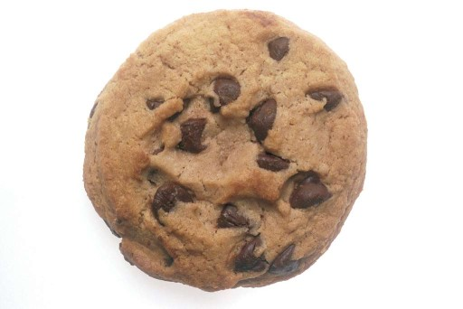

Chocolate Chip Cookies

Description
My wonderful homemade chocolate chip cookie recipe! These cookies turn out soft and sweet, with just the right amount of chewy goodness.
They are made with the finest ingredients and are made with the best known techniques. Cookies so good, they will make your grandmother roll over in her grave!
Ingredients
- 2 Cups Real Butter
- 3 Cups White Sugar
- 6 Tbs Unsulfered Molasses
- 4 Large Eggs
- 4 tsp Vanilla Extract
- 4 tsp Maple Extract
- 4 Tbs Water
- 5 Cups Unbleached White Flour
- 1 tsp Salt
- 1 1/2 tsp Baking Soda
- 1 12 oz Bag of Ghirardelli Milk Chocolate Chips
- 1 12 oz Bag of Ghirardelli Semi-Sweet Chocolate Chips
- 4 Cups Cereal of Choice (Optional)
Steps
Preparation
- Put butter out at room temperature and allow to soften.
- Preheat oven to 375 deg.
Wet Ingredients
- Combine butter and 1 1/2 Cups of white sugar in large bowl until smooth
- Mix brown sugar in separate bowl by combining remaining 1 1/2 Cups white sugar and molasses. Mix until fully incorporated.
- Combine brown sugar in with butter and sugar mix until fully incorporated.
- Scramble eggs in bowl used for brown sugar.
- Mix in vanilla extract, maple extract, and water
- Mix eggs into butter and sugar mix a little bit at a time, until fully mixed.
Dry Ingredients
- In a separate bowl combine flour, salt, and baking soda. Mix with wire whisk.
- Slowly mix flour into wet mixture, until fully incorporated.
- Mix in both bags of chocolate chips.
- Mix in cereal, if desired.
Baking!
- Cover 2 baking sheets with parchment paper.
- Scoop out cookie dough using a 2 Tbs cookie scoop.
- Place 4 rows of 3 doughballs (12 total) onto the baking sheet.
- Bake at 375 deg for 9 to 11 minutes.
- Pull cookies out and let sit on cookie sheet while the next batch cooks.
- Cookies will continue to cook as they cool.
- Use a wire cooling rack to cool further, if desired.
- When completely cooled off, cookies can be stored in ziploc bags.
Home